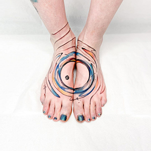
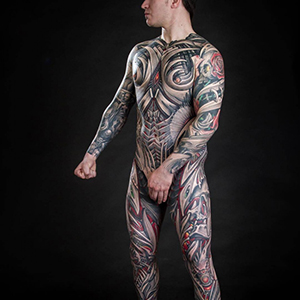
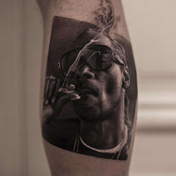
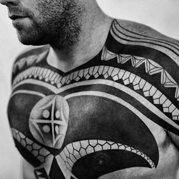
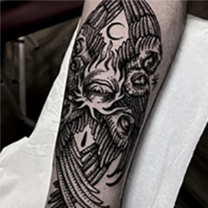
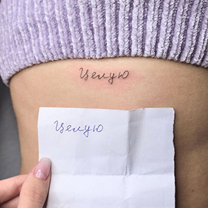
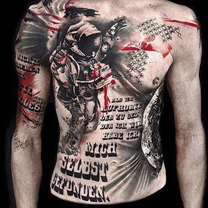
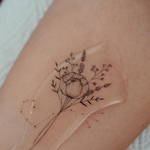

Willkommen im Studio 'Imperatrix'!
Wir freuen uns, Sie auf unserer Seite willkommen zu heißen. Unser Studio ist ein einzigartiger Ort, an dem jede Tätowierung zu einem Kunstwerk wird. Wir streben danach, eine Atmosphäre zu schaffen, in der sich jeder Kunde wohl und sicher fühlt.
Was ist ein Tattoo?
Ein Tattoo ist ein Bild, das mit speziellen Farben auf die Haut aufgebracht wird. Diese Kunstform kann verschiedene Formen, Größen und Stile annehmen, sodass jeder Besitzer seine Individualität ausdrücken kann. Tattoos können eine tiefere persönliche Bedeutung tragen, indem sie wichtige Lebensereignisse, Gefühle und Überzeugungen widerspiegeln.
Es gibt viele Tattoo-Stile, von klassischen traditionellen bis hin zu modernen minimalistischen und Aquarell-Tattoos. Jeder Stil hat seine eigenen Merkmale und eignet sich für unterschiedliche Persönlichkeiten. Tattoos werden auch als eine Form des Selbstausdrucks verwendet – sie können wichtige Botschaften vermitteln, Geschichten erzählen und die Einzigartigkeit des Besitzers betonen.
Es ist wichtig zu beachten, dass die Erstellung eines Tattoos nicht nur ein Prozess des Aufbringens eines Bildes auf die Haut ist, sondern auch die Wahl des Stils, der Farbe und der Skizze, die persönliche Werte und Ideen verkörpern wird. Bei der Auswahl eines Tattoos ist es wichtig, nicht nur das äußere Erscheinungsbild, sondern auch die Bedeutung, die es für Sie haben wird, zu berücksichtigen. Jedes Tattoo ist ein Teil Ihrer Geschichte, die Sie sich entscheiden, auf Ihrem Körper festzuhalten.
So sind Tattoos ein wesentlicher Bestandteil der Kultur des Selbstausdrucks und der Kunst und auch ein wichtiges Element im Leben vieler Menschen, das ihre Individualität und ihren Stil betont.
Warum macht man Tattoos?
Die Erstellung eines Tattoos ist nicht nur ein Modetrend, sondern auch eine Möglichkeit, sich von der Masse abzuheben. Hier sind einige Gründe, warum Sie die Möglichkeit eines Tattoos in Betracht ziehen sollten:
- Selbstausdruck: Jedes Tattoo ist eine einzigartige Geschichte, die Ihre Persönlichkeit, Interessen und Überzeugungen widerspiegelt.
- Ästhetik: Tattoos können schöne Kunstwerke sein, die Ihren Körper verschönern.
- Symbolismus: Viele Tattoos haben eine tiefere Bedeutung und können als Erinnerung an wichtige Ereignisse oder Personen in Ihrem Leben dienen.
- Selbstbewusstsein: Ein Tattoo kann Ihr Selbstwertgefühl und Ihr Selbstbewusstsein steigern, indem es Ihre Einzigartigkeit betont.
Warum wählen Sie gerade uns?
In unserem Studio 'Imperatrix' bieten wir den höchsten Servicestandard und Sicherheit. Wenn Sie uns die Erstellung Ihres Tattoos anvertrauen, können Sie sicher sein, dass Sie Folgendes erhalten:
- Professionalität: Unsere Künstler sind erfahrene Fachleute, die alle Feinheiten des Tätowierens kennen. Wir verwenden nur hochwertige Materialien und halten alle hygienischen Standards ein.
- Individueller Ansatz: Wir verstehen, dass jedes Tattoo eine persönliche Geschichte ist. Wir hören die Wünsche unserer Kunden aufmerksam an und helfen, ihre Ideen umzusetzen.
- Vielfalt der Stile: In unserem Studio sind verschiedene Tattoo-Stile erhältlich – von traditionell bis modern. Wir können Ihnen sowohl minimalistische Arbeiten als auch komplexe Kompositionen anbieten.
- Sauberkeit und Sicherheit: Wir legen besonderen Wert auf Hygiene und Sterilisation der Instrumente, um die Sicherheit jedes Kunden zu gewährleisten.
Tattoo-Stile:
Ungewöhnliche und unerwartete Formen, die die innere Welt des Künstlers widerspiegeln.
Sanfte, verlaufende Farben, die den Effekt einer Aquarellmalerei erzeugen.

Ein Stil, der mechanische und biologische Formen kombiniert.
Tattoos in Schwarz-Grau, oft mit realistischen Darstellungen.
Ein Stil, der schwarze Tinte verwendet, um große und detaillierte Muster zu schaffen.
Wird aus vielen kleinen Punkten erstellt, die Muster und Bilder bilden.

Saubere Linien und Formen, die einzigartige Muster erzeugen.

Eine Technik zur Erstellung sanfter Schatten und fließender Übergänge.

Tattoos, die Druckbilder ähneln, mit detaillierten Linien.

Ein Stil, der kräftige Farben und klare Linien verwendet, oft mit Elementen des Pop-Art.

Dunkle, mystische Bilder, oft mit komplexen Schriftarten und Symbolen.
Tattoos, die nur mit Linien ohne Farbfüllung ausgeführt werden.

Die Kunst, Buchstaben und Wörter mit einzigartigem Stil und Schriftart zu gestalten.

Einfaches und prägnantes Design, das das Wesentliche ohne überflüssige Details betont.
Moderne Interpretation des traditionellen Stils mit kräftigen Farben und komplexen Elementen.

Helle, fröhliche und exzentrische Tattoos mit Cartoon-Elementen.

Klassischer Stil mit kräftigen Farben und bekannten Symbolen wie Herzen und Schädeln.

Tattoos, die auf der östlichen Kultur basieren, oft mit Darstellungen von Drachen und Karpfen.

Tattoos, die aus komplexen Mustern und Ornamenten bestehen.

Detaillierte und realistische Darstellungen, die wie Fotografien auf der Haut aussehen.

Ein Stil, der an eine Skizze erinnert, oft mit lockeren Linien und Zeichnungen.

Helle und satte Farben, oft mit Elementen der Flora und Fauna.

Ein Stil, der schwarze Linien und geometrische Formen verwendet, inspiriert von der Kultur der Stämme.

Kombination verschiedener Stile, oft mit hellen und exzentrischen Elementen.
Tattoos mit feinen Linien und minimalistischen Details.
Helle Tattoos, die ein breites Farbspektrum verwenden.

Ein Stil, der die mexikanische Kultur widerspiegelt, oft mit Elementen der Straßenkunst.

Helle und detaillierte Tattoos, die oft Elemente der japanischen Kultur und Mythologie enthalten.

Wir laden Sie ein, unser Portfolio zu besuchen, wo Sie die Arbeiten unserer Künstler sehen können.
Vereinbaren Sie einen Termin!
Sind Sie bereit, den Schritt zu Ihrem neuen Tattoo zu machen? Vereinbaren Sie einen Termin bei unserem Künstler, und wir helfen Ihnen gerne dabei! Ihre Einzigartigkeit verdient es, im Studio „Imperatrix“ hervorgehoben zu werden.
Kontaktieren Sie uns!
Schreiben Sie uns oder rufen Sie uns über den Messenger WhatsApp an: